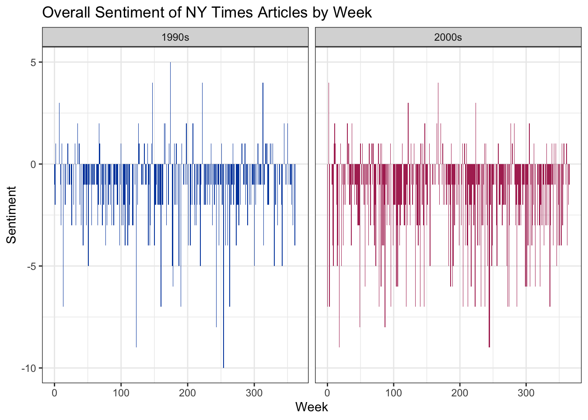
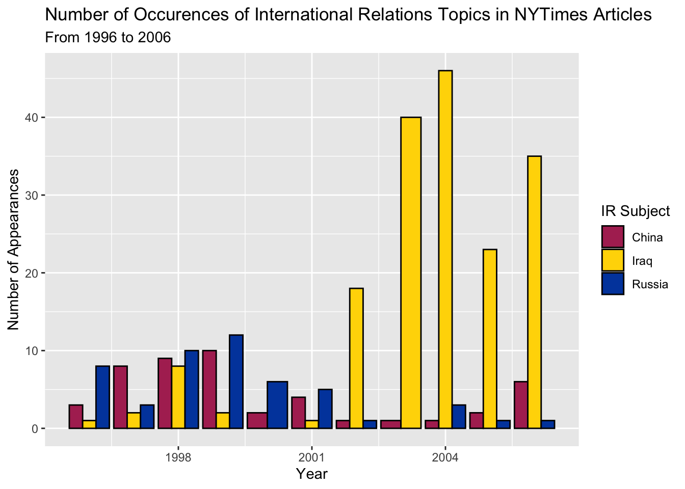
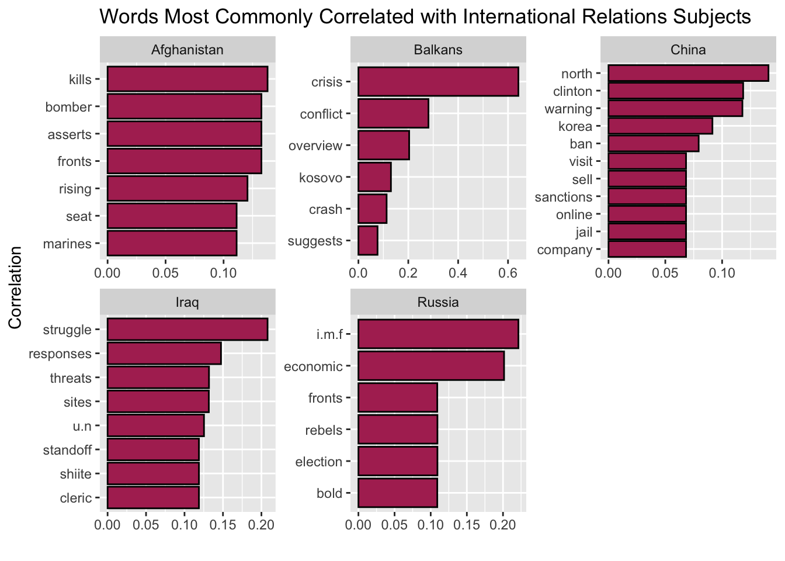
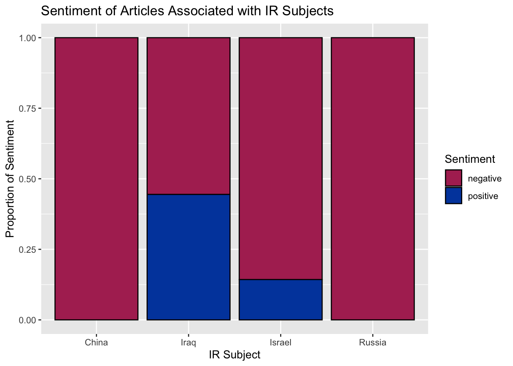

I’ve always had an interest in current events, and growing up, I read the newspaper every morning. As an International Relations concentrator, I continue to be interested in events occurring around the world. I decided to work with the New York Times dataset for this project because I am interested how different international events and countries have been portrayed in the media in the past, and how the overall sentiment toward these countries and events has changed. I hope to explore how certain events, both domestically and internationally, have changed the sentiment or number of articles written on certain topics. The data for this project comes from the NYTimes dataset included in the RTextTools package. The dataset consists of the headlines of front-page NYTimes articles from 1996 to 2006.
Common Words and Sentiments in NYTimes Articles
To begin my analysis, I started by making a wordcloud of the New York Times articles to see which topics continually reappeared in the headlines.
WordCloud
#tidying data tidy_times <- nytimes |>mutate(Subject =as.character(Subject),Date =as.character(Date),Title =as.character(Title)) |>unnest_tokens(word, Title, token ="words")#creating data for wordcloudtimes_wordcloud <- tidy_times |>anti_join(stop_words) |>count(word) |>filter(!str_detect(word, "\\d")) |>arrange(desc(n)) |>slice_head(n =80)
Based on this wordcloud, common topics that frequently appear in the headlines concern domestic politics, the economy, elections, and international conflicts and relations. Oftentimes, the context of these headlines are negative. When examining the overall sentiment of articles for every week from 1996 to 2006, the sentiment is overwhelming negative, with very few weeks across both decades displaying an overall positive sentiment.
Overall Article Sentiment By Week
#loading sentiment databing_sentiments <-get_sentiments(lexicon ="bing")#creating article by sentiment plottidy_times |>mutate(linenumber =row_number(),decade =ifelse(str_detect(Date, "^1.*"), "1990s", "2000s")) |>inner_join(bing_sentiments) |>count(decade, index = linenumber %/%70, sentiment) |>pivot_wider(names_from = sentiment, values_from = n, values_fill =0) |>mutate(sentiment = positive - negative) |>ggplot(aes(x = index, y = sentiment, fill = decade)) +geom_col(show.legend =FALSE) +facet_wrap(~decade, ncol =2, scales ="free_x") +theme_bw() +scale_fill_manual(values =c("1990s"="#0047AB", "2000s"="maroon")) +labs(title ="Overall Sentiment of NY Times Articles by Week",x ="Week",y ="Sentiment" )
Joining with `by = join_by(word)`

Considering my interest in International Relations, I decided to examine the prevalence of different countries in the news across time. For this analysis, I chose to focus on China, Iraq, and Russia, which are countries that are commonly discussed in International Relations and have been important to foreign affairs in recent decades.
Prevalence of different IR subjects across time
#creating count of different subjects plotnytimes |>mutate(Subject =str_to_lower(Subject),year =str_extract(as.character(Date), "\\d{2}$"),century =ifelse(str_detect(year, "^9."), "19", "20"),year =as.integer(str_c(century, year))) |>filter(str_detect(Subject, "(russia|china|iraq)")) |>mutate(ir_subject =str_extract(Subject, "(russia|china|iraq)"),ir_subject =str_to_title(ir_subject)) |>group_by(year, ir_subject) |>summarize(n =n(), .groups ="drop") |>ggplot(aes(x = year, y = n, fill = ir_subject)) +geom_col(position ="dodge", color ="black") +scale_y_continuous(breaks =pretty_breaks(n =4)) +scale_fill_manual(values =c("China"="maroon", "Iraq"="gold", "Russia"="#0047AB")) +labs(title ="Number of Occurences of International Relations Topics in NYTimes Articles",subtitle ="From 1996 to 2006",x ="Year",y ="Number of Appearances",fill ="IR Subject" )

Based on this visualization, the majority of stories have been written about Iraq during this time period, with a large spike in 2002 and 2003, correlating with the beginning of the Iraq war. More stories were written about Russia and China in the late 19990s compared to Iraq, but the number of these stories tapered off with the start of the Iraq war. Expanding the number of states examined to also include Afghanistan, the Balkans, and the U.S., I wanted to look into the words most correlated with these countries in order to learn what topics were commonly written about when these countries were in the news.
Correlated topics with IR subjects
nytimes$Title <-as.character(nytimes$Title)#sectioning rows to article lengthtimes_section_words <- nytimes |>select(Date, Title) |>mutate(section =row_number() %/%1) |>unnest_tokens(word, Title) |>filter(!word %in% stop_words$word,!is.na(word))#finding correlations of articlesword_cors <- times_section_words |>group_by(word) |>filter(n() >=5) |>pairwise_cor(word, section, sort =TRUE)#plot of words correlated with different subjectsword_cors |>filter(item1 %in%c("iraq", "china", "russia", "afghanistan", "balkans")) |>group_by(item1) |>slice_max(correlation, n =6) |>ungroup() |>mutate(item2 =reorder(item2, correlation),item1 =str_to_title(item1)) |>ggplot(aes(item2, correlation)) +geom_bar(stat ="identity", fill ="maroon", color ="black") +facet_wrap(~item1, scales ="free") +coord_flip() +labs(title ="Words Most Commonly Correlated with International Relations Subjects",x ="Correlation",y ="" )

Based on these correlations, it appears that news stories about China and Russia were more likely to be about economic issues, while those about Afghanistan, Iraq, and the Balkans referred to the conflicts occurring in these countries during this time period. It is particularly interesting that the word “crisis” has such an extremely strong correlation to the Balkans in comparison to all the other words.
Beyond just the words most correlated with these countries, I was interested in looking at the sentiment of the articles written about these countries.
Sentiments Associated with Different IR Subjects
#joining times data with bing sentimentsbing_word_counts <- tidy_times |>inner_join(get_sentiments("bing")) |>group_by(sentiment, Subject) |>count(word, sentiment, sort =TRUE) |>ungroup()
Joining with `by = join_by(word)`
#creating plot of bing sentiments by subjectbing_word_counts |>filter(str_detect(Subject, "(russia|china|iraq|israel)")) |>mutate(ir_subject =str_extract(Subject, "(russia|china|iraq|israel)"),ir_subject =str_to_title(ir_subject)) |>group_by(sentiment) |>slice_max(n, n =10) |>ggplot(aes(x = ir_subject, fill = sentiment)) +geom_bar(position ="fill", color ="black") +scale_fill_manual(values =c("positive"="#0047AB", negative ="maroon")) +labs(title ="Sentiment of Articles Associated with IR Subjects",x ="IR Subject",y ="Proportion of Sentiment",fill ="Sentiment")

Based on this plot, the sentiment of articles concerning International Relations subjects are generally negative. This is particularly true of Russia and China, in which the proportion of negative articles written about these countries is 1. Surprisingly, Iraq had the most positive sentiment of associated articles, with almost half of all articles having a more positive sentiment.
Conclusion
Overall, the sentiment of New York Times Articles from 1996 to 2006 is generally quite negative. The articles about International Relations subjects continue this trend, with lots of negative sentiment associated with these articles, particularly articles written about Russia and China. In the future, further analysis of different countries or subjects could be interesting to examine the sentiment of these topics and how they have differed over time. Furthermore, looking into how the number and sentiment of articles written about Russia and China has changed would be fascinating considering the importance these countries hold in International Relations today.